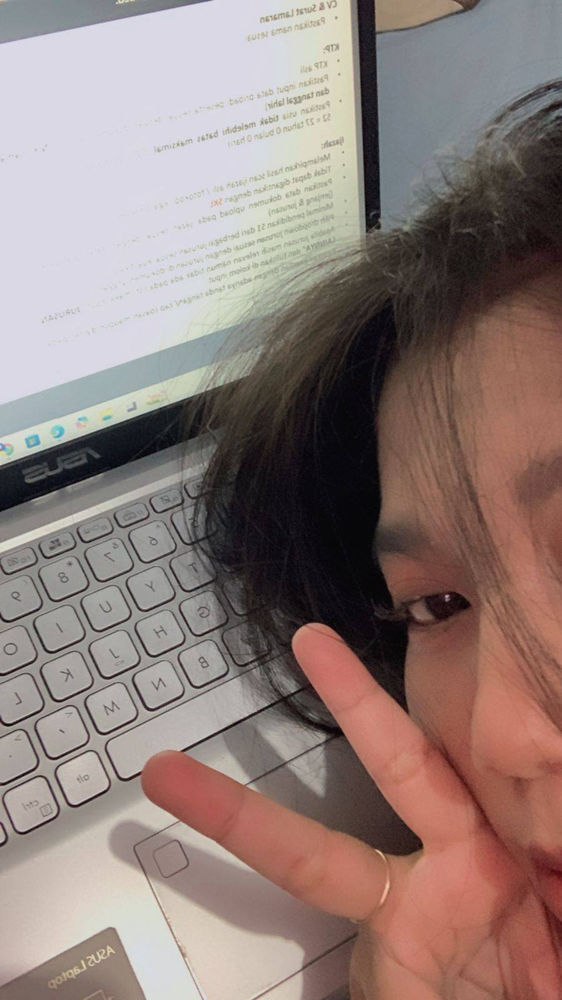

Photo pertama yang kamu kasi ahaha, disini kamu cantik banget, kamu lagi breifing buat kerja, semangat yang cantik kerjanya!
Photo dihari yang sama kamu breifing buat kerja, yang sebelumnya aja setengah muka udah cantik banget, apalagi yang ini CANTIKKK BANGET POKOKNYA.
Photo ketiga yang kamu kasi, kamu dimata aku selalu cantik, lucu. Aku suka banget rambut kamu, kamu jago banget makeup ya, belajar dari siapa sieee
Photo yang sama kaya sebelumnya, cuman bedanya disini kamu manyun ahaha, kamu bilang ini aneh kan waktu itu? hushh kata siapa aneh, orang secantik ini juga, no no bilang kaya gitu yaa!
Yah gaada photonya, kamu sering" kirim aku photo yaaa hehe